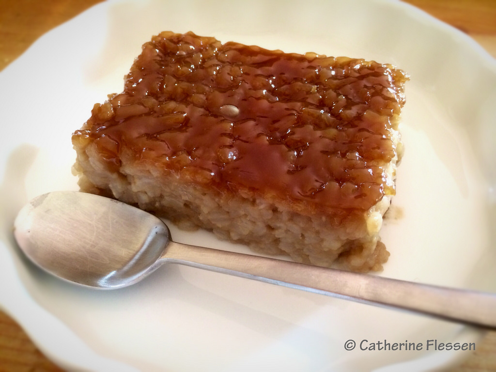

These are classic, Filipino desserts.
Banana cue: It is a plantain fried with brown sugar. It is placed on a skewer.
Bibingka: It is a sweet rice or cassava that is broiled a little bit in the oven.

Biko: It is a sweet rice, brown sugar, coconut milk that is similar to bibingka, but it is not put in the oven.

Halo Halo: This name is translated to mix mix. You take shaved ice, evaporated milk, sugar, and topping and mix it together with a spoon.
Photo credits: Banana Cue: wikimedia commons, Bibingka: c.flessen on flickr, Halo Halo: my photo taken at Mang Inasal